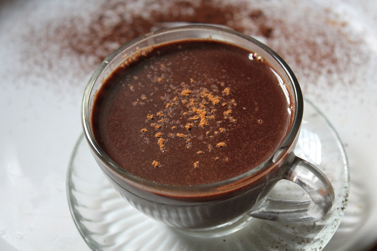

Hot Choclate

Description
Hot chocolate, also known as hot cocoa or drinking chocolate, is a heated drink consisting of shaved or melted chocolate or cocoa powder, heated milk or water, and usually a sweetener. It is often garnished with whipped cream or marshmallows.
Ingredients
- condesed milk
- 1/2 cup unsweetend cocoa
- 1 teaspoon vanilla extract
- 1/8 teaspoon salt
- hot water
- 3 mini marshmallows
Steps
- Pour the milk into a small saucepan and place it over medium heat. Warm the milk until it's hot but not boiling, stirring occasionally to prevent it from scorching.
- In a small bowl, combine the cocoa powder, sugar, and salt. Once the milk is hot, add the cocoa mixture to the saucepan. Whisk continuously until the cocoa and sugar are completely dissolved and the mixture is smooth.
- Remove the saucepan from heat and stir in the vanilla extract. Pour the hot chocolate into a mug and serve immediately